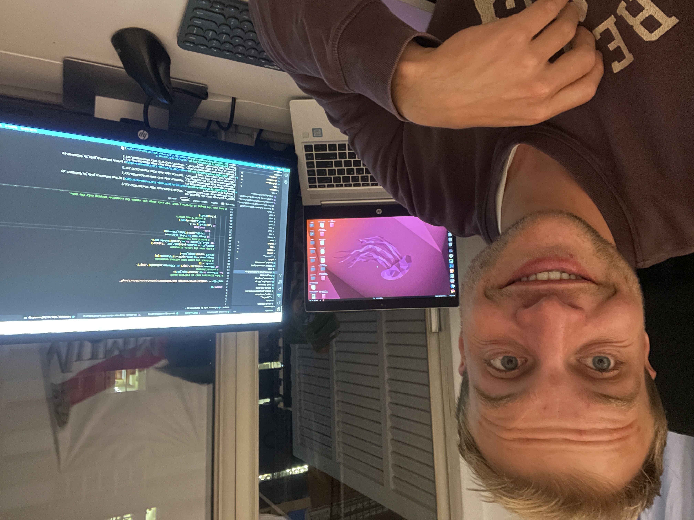

10 Beyond
the horizon
The future by a thread,
disappointment, pride and
on to plan B.
Here we are. On the eve of a brand new chapter in the expat experience, where we will honour the 'nomad' part of 'digital nomad'. Right now I'm flying across the Atlantic and I can't wait to spread my wings and make a new start after two not always easy years. After my world tour in 2015 was over, I was determined to see the other side of the earth one day, but as the years went by, this long-cherished wish faded into the background. At first it seemed to be a new life in Sweden when I moved there with my former girlfriend. After this relationship ended and my life was pretty messed up, being busy with my career was a nice way to find my way back up. That effort paid off. In contrast to the PhD application round last year, where, as you could read in the previous blog, no university invited me for an interview, this year I missed out on a PhD by a hair's breadth. It was last May and I had almost forgotten that I had applied to WildDrones for a position monitoring African wildlife with drones when I received a message from Fabio Remondino on behalf of FBK in Trento (Italy). After several rounds of interviews, only two candidates were left. I couldn't stand the suspense anymore until I unfortunately received an email that they had finally chosen the other candidate. Sucks like a plug of course, but I was still very proud that I had made it to the last two and had shown myself. Your life hangs by a thread. I realised once again that if a PhD or whatever comes along in the future, the free life I lead now could just be over. Because my current boss, Ramon, whom I help make website BOX21, it doesn't matter whether I work in the morning, in the evening or on the weekend, whether I go on vacation for a few days or from wherever I work. Meanwhile, in Barcelona, the mercury rose to 35 degrees and the city slowly emptied. People in the Netherlands were also preparing for the summer holidays, and I had no idea what my plans were.
 What I did know was that despite the nice programming steps and a nice salary increase, living in Barcelona still needed a few extra months to save money for fun things. Suddenly I thought of that long-cherished wish to visit that one continent. Could it be….. that wish that had hidden somewhere very far away in my brain. There probably never came a better time than now and before I knew it the plan was there to move to this unknown continent. A country stood head and shoulders above it for me. Here it was cheap, people spoke Spanish and it was relatively safe. With my Spanish B1 diploma in my pocket, I could practise Spanish endlessly. Tring, tring….. 'Mom, we're going to book now', I called the Netherlands. An hour later everything was fixed and there was no going back.
I wanted to tell you about the past few months. That I was allowed to play my first match against the English at Campo La Foixarda in Barcelona at the rugby INEF Barcelona. In a blog you can of course exaggerate everything a bit, but I'm not exaggerating, with the first ball I received I ran and pushed the ball over the back line. A try! Mvp mvp (most valuable player), was shouted. It was an unforgettable experience and a great finish to a year of rugby in Barcelona. In rugby, respect for the opponent is very important. After the game, our and the opponent's players were also mixed at a long table filled with beer. Because some Spaniards still speak poor English and most English don't speak Spanish either, I was able to help translate several times.
 In April, when a busy period was coming, I escaped Barcelona for a week for a wonderful walking holiday. I walked part of the famous Camino, hiking trails that run like capillaries through Europe and end up in Santiago de Compostela. I myself walked the Camino del Norte, but only from Santander to Oviedo in the north of Spain. A person does not need much. Pack your backpack and go for a walk. It was still early in the season and sometimes I was the only one staying in the albergues. Fortunately I met someone from Hong Kong and someone from Ireland. When you almost always live in the hustle and bustle of the city for a year, you realise how wonderful it is to be able to escape it for a while.
In April, when a busy period was coming, I escaped Barcelona for a week for a wonderful walking holiday. I walked part of the famous Camino, hiking trails that run like capillaries through Europe and end up in Santiago de Compostela. I myself walked the Camino del Norte, but only from Santander to Oviedo in the north of Spain. A person does not need much. Pack your backpack and go for a walk. It was still early in the season and sometimes I was the only one staying in the albergues. Fortunately I met someone from Hong Kong and someone from Ireland. When you almost always live in the hustle and bustle of the city for a year, you realise how wonderful it is to be able to escape it for a while.
 My 3 brothers came to visit Barcelona. Due to problems at Transavia, they only seemed to be able to come from Friday to Sunday, but luckily my brother Sander had put a stop to that because he had already seen that flights also departed on Wednesday. We lived like real tourists and visited the highlights of Barcelona. W-hotel, Raval, Port Olympic, Castell Montjuic and on Sunday a nice trip to the mountain town of Montserrat. How cool is it that you can show your brothers how you live abroad. A game that used to be spoon-fed to us is the Brabant 'riken'. It worked out well that there were four of us and after we had visited the bunker's viewpoint, the cards went on the table at the terrace filled with Spanish people. It was just like 'before' at the campsite.
My 3 brothers came to visit Barcelona. Due to problems at Transavia, they only seemed to be able to come from Friday to Sunday, but luckily my brother Sander had put a stop to that because he had already seen that flights also departed on Wednesday. We lived like real tourists and visited the highlights of Barcelona. W-hotel, Raval, Port Olympic, Castell Montjuic and on Sunday a nice trip to the mountain town of Montserrat. How cool is it that you can show your brothers how you live abroad. A game that used to be spoon-fed to us is the Brabant 'riken'. It worked out well that there were four of us and after we had visited the bunker's viewpoint, the cards went on the table at the terrace filled with Spanish people. It was just like 'before' at the campsite.
 In May, both the Spanish course and the programming competition Fathomnet ended. That was quite a relief because in hindsight I had taken on too much hay. I regularly slept badly and when you are always doing a little bit of everything, this of course is not efficient at all. I hope this busy period has been a wise lesson for the future. The last month started in Barcelona. There was a lot of time and how wonderful it was to focus on working on BOX21 in combination with Salsa and Bachata dance evenings. I was still struggling for weeks at Christmas to replace a logo, but now I managed to create an entire notification page on BOX21 that could be used to spam users with mail. The work is getting more and more fun because I understand it better and Ramon and I are getting more on the same level. Ramon is a really great colleague. We can switch so quickly. Ramon wanted to practise his English and so now we talk in English. And I thought it would be ideal if we make screencasts where the camera is on so that you also see someone. In this way we always come to a better way of working together so that we can get to work full of energy.
In May, both the Spanish course and the programming competition Fathomnet ended. That was quite a relief because in hindsight I had taken on too much hay. I regularly slept badly and when you are always doing a little bit of everything, this of course is not efficient at all. I hope this busy period has been a wise lesson for the future. The last month started in Barcelona. There was a lot of time and how wonderful it was to focus on working on BOX21 in combination with Salsa and Bachata dance evenings. I was still struggling for weeks at Christmas to replace a logo, but now I managed to create an entire notification page on BOX21 that could be used to spam users with mail. The work is getting more and more fun because I understand it better and Ramon and I are getting more on the same level. Ramon is a really great colleague. We can switch so quickly. Ramon wanted to practise his English and so now we talk in English. And I thought it would be ideal if we make screencasts where the camera is on so that you also see someone. In this way we always come to a better way of working together so that we can get to work full of energy.
One last lunch with roommates Tommasso, Jessica and Stephanie. Manuela, Koen, Erika, Greg, Daniel, Annabela, Esther, Dorien, Jordi, Anni, Jeromy, Jeromy, Isabella and Wendy. It was great meeting you and spending so many hours on the dance floor together. Thanks for the wonderful hours in Antilla, Dio, Poblenou, Park industrial, Vivaldi. Every night there was a party somewhere in Barcelona. On my farewell evening I even received a beautiful painting with the skyline of Barcelona from a girl.
Before the big trip I stayed in Bavel for another two weeks, back in my familiar surroundings. Coincidentally, the first weekend friends group from Bavel ‘the nephews’ organised a weekend. It is always exciting whether you still fit in because I have a completely different life than my friends, most of whom stick around Bavel. But it was really cosy in a beautiful country house in the Belgian Ardennes. And so The Expat Experience part 1 is over. A moment that I look forward to so much is about to begin. It will be an amazing experience. I can not wait. If you jump along, I'll show you what beautiful things the world has to offer. Just like in 2015 when I also kept a blog and wrote before leaving:
Looking for adventure. Going across land, across our planet and with as little money as possible for the richest experiences. The versatility of travel where the most fantastic or terrible can happen unexpectedly. Meeting with backpackers, locals or nobody. Off the known path. Take the gamble and win or lose.